Andrew Gelman posted about an analysis of MLB game logs that looked at the association of jet lag with various performance metrics. My goal here is to focus on a single metric—run differential—and reframe this problem in a way that’s motivated by a few earlier posts by Gelman.
First, here’s a brief description of what Song, Severini, and Allada (“SSA”), the authors of the jet lag analysis, did. The association between jet lag and performance metrics has been analyzed using data from various sports1. In terms of MLB data, there seem to be two relevant previous analyses: one by Recht, Lew, and Schwartz and another by Winter and friends. In their 1995 correspondence with Nature, Recht et al. argued for the negative consequences of an away team’s eastward travel by analyzing three MLB seasons in terms of win percentages, linear regression on the run difference between the home and away teams, and logistic regression on the probability of a home win. The Winter et al. study looked at ten years of MLB data and did … well, I don’t know because I don’t have access to the article and couldn’t find a PDF online. Anyway, SSA expanded on these previous studies by considering 20 MLB seasons and by examining many performance metrics.
SSA defined a team’s jet lag based on the number of time zones a team crossed, adjusted by the number of days off. If the Mariners traveled from the west coast to play the Yankees without a day of rest, they would play the first game with a lag of three. This lag value is assumed to decay by one unit per day.
From these lag values, SSA constructed binary predictors, classifying a team with a value of two or more as having jet lag. In total there were four lag predictors based on two dimensions: (1) home or away and (2) direction of travel, eastward or westward. For each aggregate2 measure of interest, such as winning percentage or batting average, SSA ran a linear regression with these lag predictors as well as categorical predictors indicating the home team and away team.
I’ve calculated jet lag values from Retrosheet’s game logs for 1992 through 2011, the same year range that SSA considered. My lag values largely match SSA’s values, but there are some differences.
To visualize these lag values, let’s focus on Seattle’s 2001 season. (Click through for a larger image where you can more clearly make out the vertical lines for each day.)
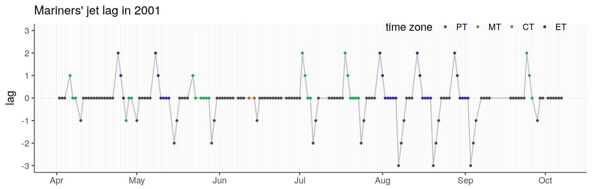
They opened the season with a three-game series at home and then traveled for a series against Texas, with one day off between series. For the first game against the Rangers, their lag was 1: +2 for PT→CT, -1 for the day off between series. The rest of that series, they are back at a lag of 0. Note that they never reached +3 for PT→ET trips because they always had a travel day. For some of their trips back to the west coast, however, they reached -3 because they didn’t have an off day.
To construct the binary jet lag predictor for eastward travel, any game at +2 or above is coded as 1 and all other games are 0. Likewise, any game at or below -2 is coded as 1 for the westward predictor. Here’s how these predictors are distributed across teams and seasons.
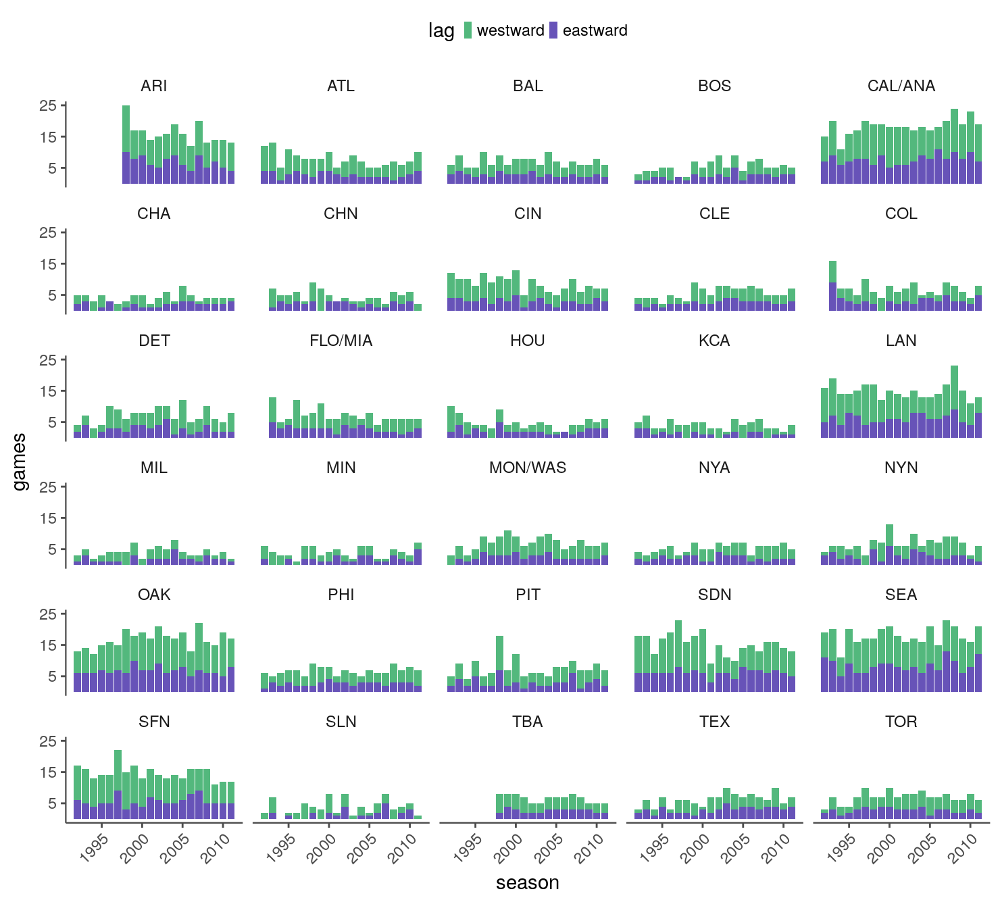
Unsurprisingly, teams’ records in the small subset of lag games they played are all over the place compared to their records in the non-lag games (thick gray lines below).
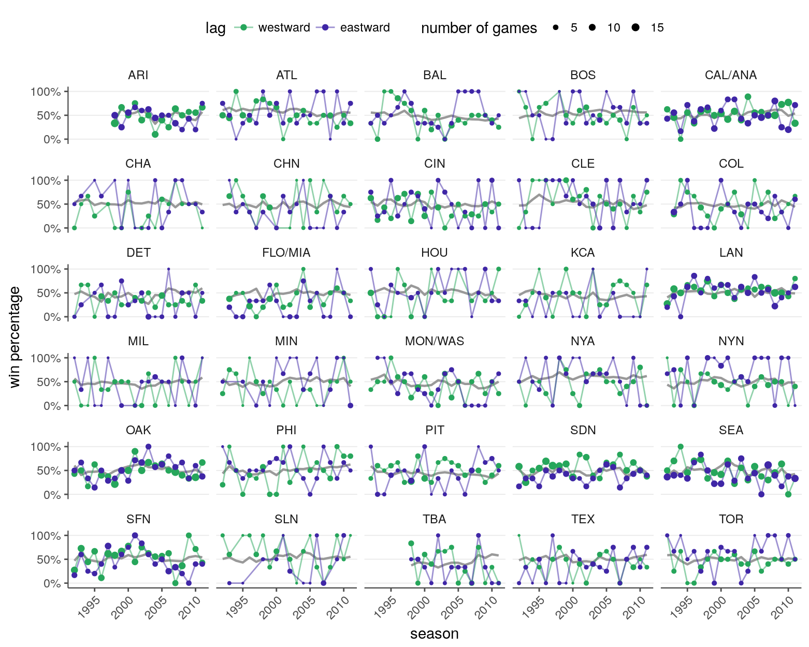
Gelman has a few posts about estimating the abilities of soccer teams using goal differentials. I wanted to take a similar approach to estimate the association of jet lag with run differentials. Here’s what I’ve come up with. (This was built up from simpler models. See the Stan files in the “models” directory, as well as these descriptions.)
There are \(K\) teams, and the total number of games played by a team is split into \(J\) periods. For the \(i\)th game, the home team is denoted as \(k[i]\) and its period as \(j[i]\), and the away team is denoted as \(k^*[i]\) and its period as \(j^*[i]\). Each team corresponds to a team in a given year3, and periods are formed by splitting the season into \(J\) parts. As an example, across two seasons with 30 teams and six periods, there would be 60 teams and a total of 360 periods. Finally, these games are played in \(M\) parks.
\(y_i\), the difference between the runs scored by the home and away teams in the \(i\)th game, is modeled as
\[ y_i \sim t_{\nu}(\mu^{\text{home}}_{j[i],k[i]} - \mu^{\text{away}}_{j^*[i],k^*[i]}, \sigma^y_{m[i]}). \]
\(\nu\) is the t-distribution’s degrees of freedom and is estimated from the data. I’ve assigned \(\nu\) a prior of \(\text{Gamma}(2, 0.1)\) following what Milad Kharratzadeh did in his analysis of the English Premier League, who in turn was following the recommendation of Juarez and Steel.
The scale parameter \(\sigma^y_m\) is a little more interesting because it varies across parks:
\[ \begin{aligned} \sigma^y_m &\sim \text{N}^{+}(\mu^y, \tau),\; m \in \{1,\ldots,M\},\\ \mu^y &\sim \text{N}(0, 5),\\ \tau &\sim \text{N}^{+}(0, 3). \end{aligned} \]
This should allow, for example, hitter-friendly parks to have more lopsided run differentials. With these priors (and the rest of the priors I’ll introduce), I’m aiming to be weakly informative. I don’t expect \(\sigma^y_m\) to reach, say, ten because that would make unrealistically high run differentials likely.
The t-distribution’s location parameter is the most interesting part of the model. If \(\mu^{\text{home}}\) is greater than \(\mu^{\text{away}}\), the outcome favors the home team. The home team’s parameter is defined as
\[ \mu^{\text{home}}_{j[i],k[i]} = \alpha_{j[i],k[i]} + \gamma_{l[i]} + x_{i,1} \beta^{\text{west}} + x_{i,2} \beta^{\text{east}} + \delta \]
where
\(\alpha_{jk}\) is the “ability” of a the \(k\)th team in the \(j\)th period.
\(\gamma_l\) the ability of the \(l\)th starting pitcher.
the \(\beta\) coefficients are for the westward and eastward jet lag predictors. The binary predictor \(x_{i,1}\) is 1 if the home team had a westward jet lag value of at least two for the \(i\)th game.
\(\delta\) is the home-field effect.
The away team’s location parameter follows a similar pattern, dropping \(\delta\):
\[ \mu^{\text{away}}_{j^*[i],k^*[i]} = \alpha_{j^*[i],k^*[i]} + \gamma_{l^*[i]} + x_{i,3} \beta^{\text{west}} + x_{i,4} \beta^{\text{east}}. \]
Note that the home and away teams share the same lag coefficients. Both Recht et al. and SSA split by home and away here (for four coefficients total), but I don’t understand the motivation for this. Why should there be a distinction between a west coast team traveling to the east coast and an east coast team returning to the east coast? Perhaps the idea is that sleeping in your own bed or home cooking or something like that could lessen the severity of jet lag, in which case an interaction could be added.
The abilities of team \(k\) share a common mean and standard deviation across \(J\) periods:
\[ \begin{aligned} \alpha_{j,k} &\sim \text{N}(\theta_k, \sigma^{\alpha}),\\ \sigma^{\alpha} &\sim \text{N}^{+}(0, 2). \end{aligned} \]
\(\theta\) is based on a prior score \(z_k\) for each team:
\[ \begin{align} \theta_k &\sim \text{N}(z_k \omega, \sigma^{\theta}),\; k \in \{1,\ldots,K\},\\ \omega &\sim \text{N}(0, 2),\\ \sigma^{\theta} &\sim \text{N}^{+}(0, 2). \end{align} \]
For these scores, I’m using the win tallies for each team in the previous season, scaled to range from -1 to 1. Given that \(\theta_k\) is estimated across an entire season, the prior scores may not have have much of an influence on \(\theta_k\), in which case \(z_k \omega\) could be replaced with zero.
The contribution of the starting pitchers is modeled as
\[ \begin{aligned} \gamma_l &\sim \text{N}(0, \sigma^{\gamma}),\; l \in \{1,\ldots,L\},\\ \sigma^{\gamma} &\sim \text{N}^{+}(0, 2). \end{aligned} \]
Unlike teams, where each season spawns a new set of teams, pitcher \(l\) spans seasons and isn’t tied to any one team.
Finally, the home-field and lag parameters are assigned a prior of \(\text{N}(0, 2)\).
Conceptually, I think there are some things to like about this model.
Modeling run differentials rather than win probability should make better use of the data.
The scale for the run differentials is allowed to vary among parks, which seems like a valuable feature given the variation in park dimensions.
The abilities of the starting pitchers aren’t diluted by the team’s overall ability.
And a few things bother me (and probably many other things should).
Teams aren’t modeled hierarchically across seasons. The Astros in 2011 are treated as a different team than the Astros in 2010. There is some connection from year to year in that the records from the previous season are used to calculate the prior scores for the current season. Also, the starting pitcher parameters are shared across seasons.
This isn’t a generative model. A discrete response is modeled as continuous. One of Gelman’s post discusses this a bit.
Run differentials look fairly consistent across the 20 season span.
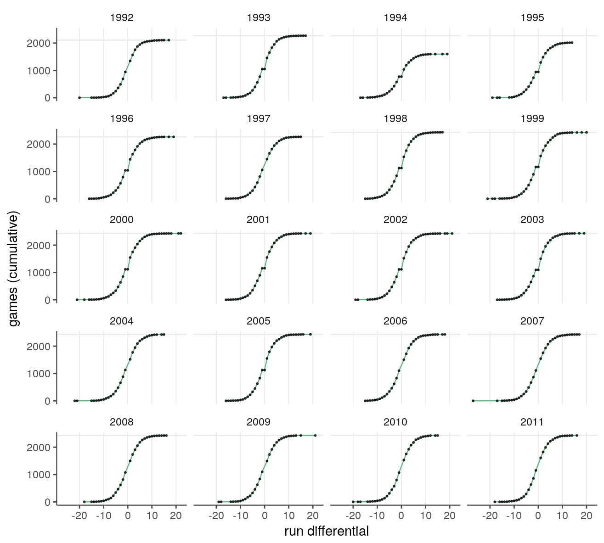
The bulk of the games have scores within the -10 to 10 range, and as expected the tails show much more variation between seasons. The largest magnitude for a score differential in this set is 27 in 2007.
The horizontal guide lines mark the expected number of games given the number of teams that were in the league that season. 1994 and 1995 fall short due to the strike. The curve of some seasons have a blip in their underside as they cross zero (e.g., 2001, 2002, …), which is caused by ties. Another, more subtle pattern is the that the lines are longer from 0 to 1 than they are from -1 to 0. I’ll come back to this in the home-field advantage section below.
I’ve fit the above model (Stan file) using games from 1992 through 2011. When preparing the data, I’ve chosen to split the season into six periods (27 games per period for a 162 game season). I haven’t taken the time to compare different period sizes, but I hope that’s a good window size for catching the variability in a team’s ability across a season.
Clicking through ShinyStan’s interface, most diagnostic plots and metrics look OK. In terms of MCMC effective sample size, \(\sigma^{\alpha}\) and the log posterior are both on the low end, with with ∼200–300 effective samples out of four thousand draws. I originally wanted to add an additional level with each team having a \(\sigma^{\alpha}\), but the hyperparameter for these also had a similarly low number of effective samples. I might be overlooking obvious changes to the model that would improve these measures.
Before looking at the posterior predictive intervals or parameter estimates, let’s get a sense for how uncertain the model thinks the outcome of a game is when we assume that we know all the parameters. To generate the plot below, I’ve set the t-distribution’s location to zero (i.e., identical teams in terms of ability, lag, home-field advantage, and pitchers) and fixed \(\nu\) and \(\sigma^y\) at their mean values. Each of the 50 lines corresponds to a group of 162 games.
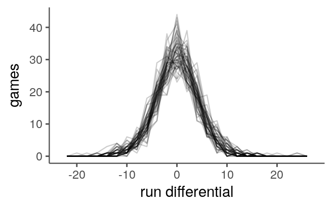
The peak around zero deviates from the pattern of real score differentials. Only rarely are baseball games recorded as a tie, while the model will happily produce score differentials near zero for equally matched teams. I’m deciding a win or loss by taking the sign of the score differential, so that will always declare a winner, but it also doesn’t allow for the rare tie.
Translating run differentials for each “season” into wins gives the following distribution.
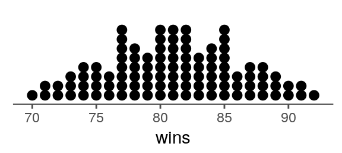
Next let’s see how the observed data look compared to the posterior predictive intervals. The data set consists of over 40,000 games. The below plot selects 40 random games from six seasons. The bounds of the intervals are rounded so that they extend to the nearest integer.
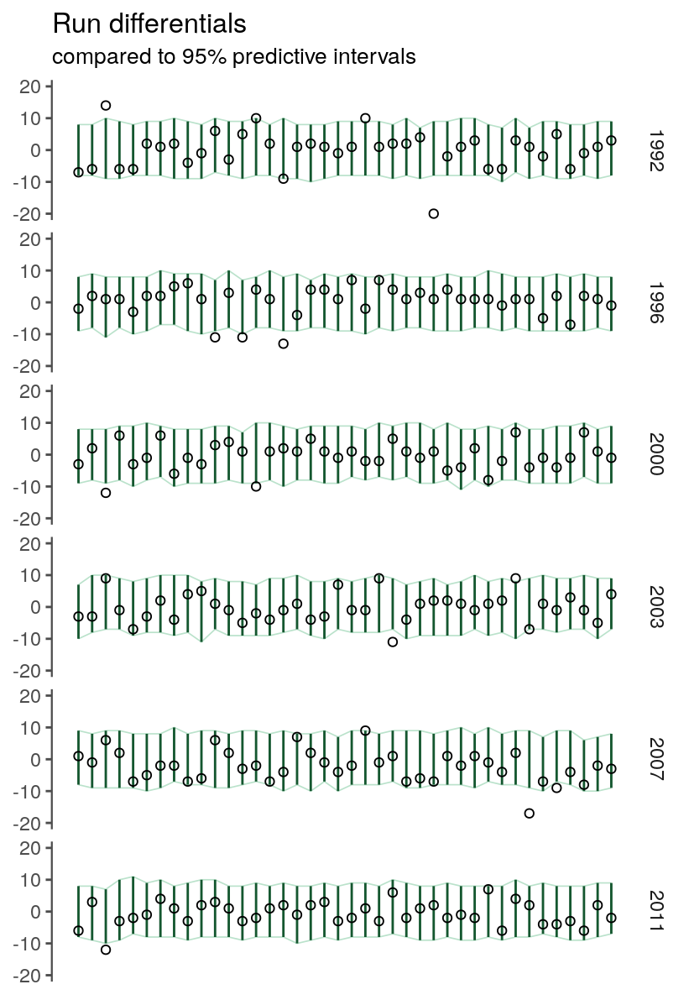
Those intervals are pretty wide. I don’t think I can expect more narrow ones given the variation present in the identical ability simulation above. If I look across all the games in the data set, the observed run differentials are within the 95% predicted intervals 95% of the time (96% if I round the bounds), so the model at least seems calibrated.
Converting the simulated run differentials into wins, the model appears to give reasonable though wide estimates for a team’s record.
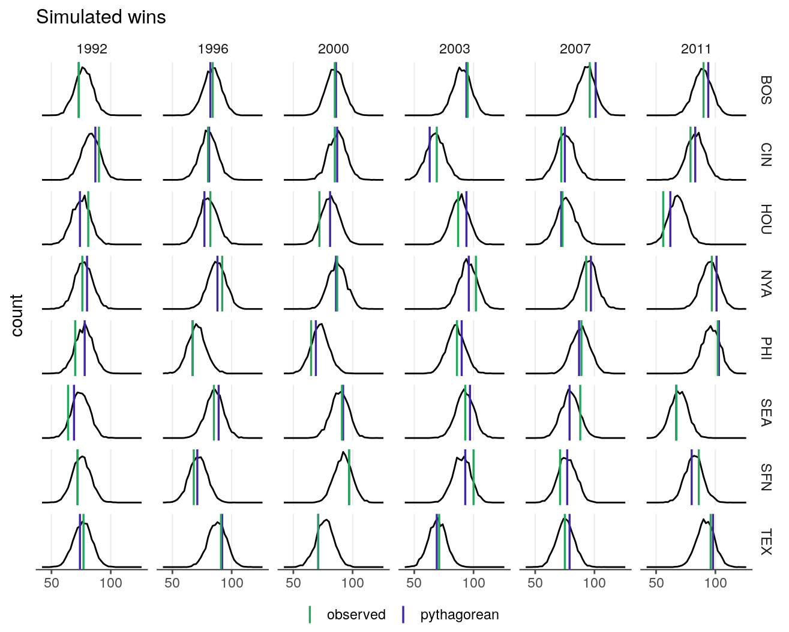
In addition to the observed number of wins, I’ve included a line for the pythagorean wins, where the pythagorean win percentage is calculated solely based on the runs scored (S) and runs allowed (A): \(\text{S}^{1.83} / (\text{S}^{1.83} + \text{A}^{1.83})\).
While reading about pythagorean wins, I came across a FanGraphs article that provides the motivation for their Base Runs statistic. Essentially, just as run differentials give more information about a team’s ability than their record does, they argue that using the underlying offensive metrics gives more information than run differentials do. It might be interesting to explore moving this model in that direction.
For now, though, it seems like the model is behaving well enough that it’s worth examining its parameter estimates, including those for the jet lag coefficients.
The t-distribution’s scale parameter varies across parks. The relationship between how offensive friendly a park is and the scale parameter isn’t that clear cut because the response is run differentials rather than total runs. The increased offense from both sides might just cancel out. But, given that lopsided games are not a rare event, I’d expect that parks that are more conducive to run scoring would tend to have larger scale parameters. Let’s see.
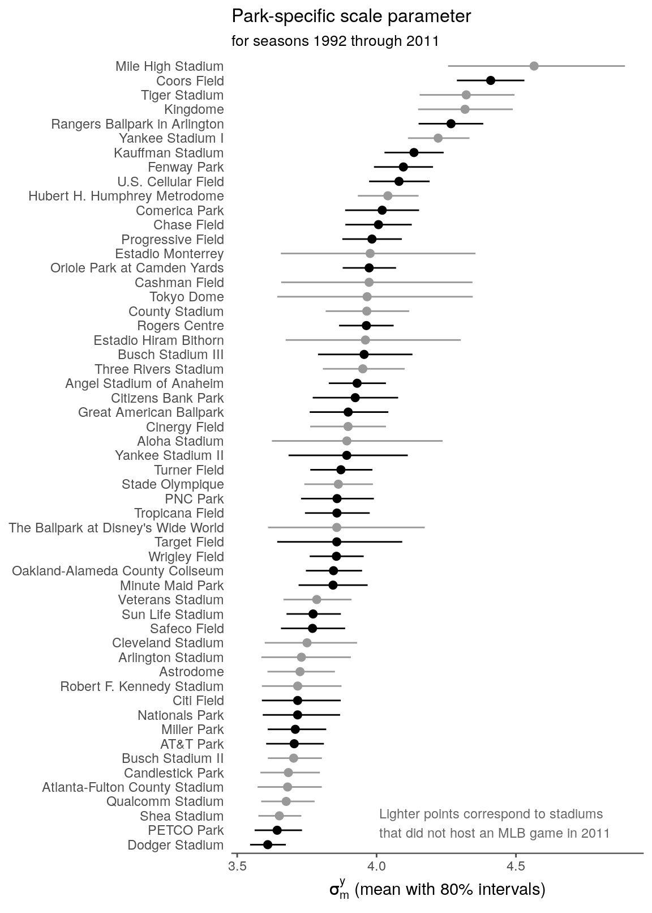
The Colorado parks filling the top two spots fit that expectation. Petco being near the bottom also fits. I thought that Safeco would be a bit lower than it is, and I didn’t expect to see Dodger Stadium at the bottom. For the most part, I don’t know which parks are hitter friendly. I tried getting an idea by flipping through park factor rankings for different years. That helped a little, but those rankings, which are based on teams’ home and away splits in runs scored, vary lot from year to year.
The t-distribution’s location parameter incorporates an ability estimate for each team. Within a season, team \(k\)’s ability varies across periods with a common mean \(\theta_k\).
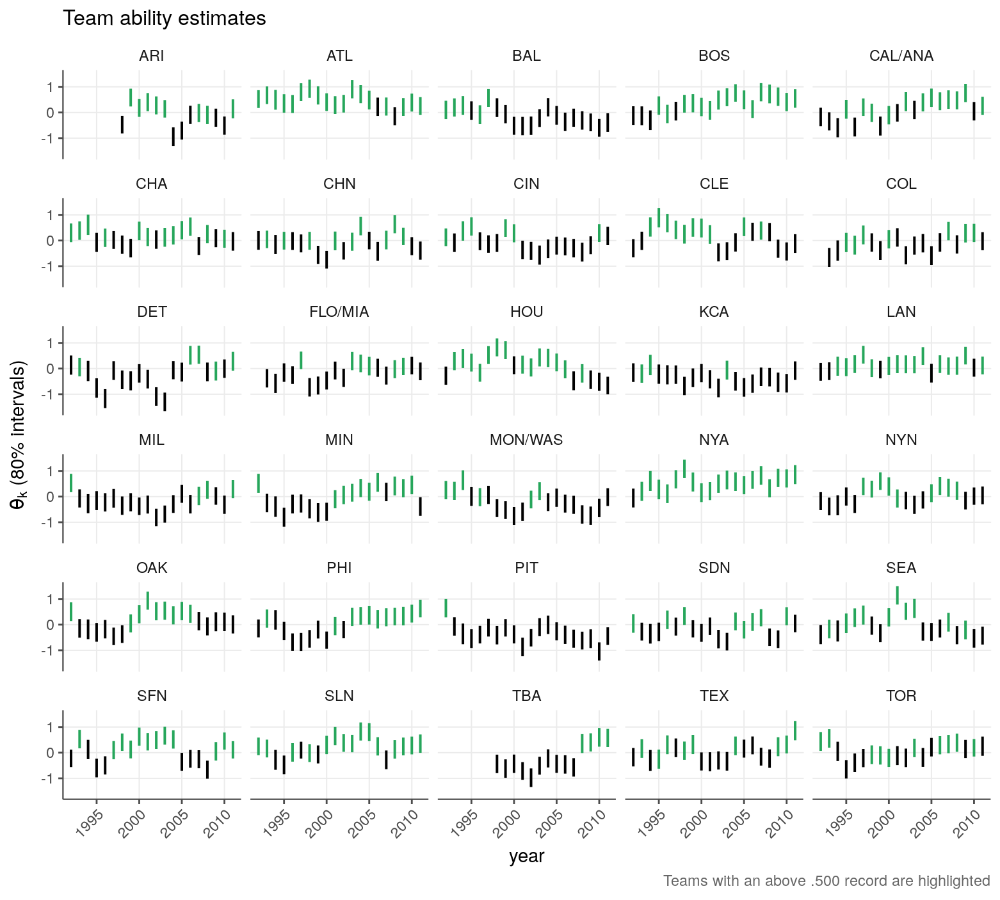
In addition to the overall team abilities, we have an estimate of each starting pitcher’s ability. Because pitchers don’t often pitch complete games, the run differential for a good pitching performance can be bad if the bullpen screws things up, but a consistently bad bullpen should be reflected in the team’s ability, so this should usually even out in the log run. Sorting the mean estimates for \(\gamma\), the top pitchers look good4, and the bottom pitchers don’t look great (at least in the data set’s year range; e.g., Greg Harris seems to have had a good career, but we’re just catching the less-than-stellar tail end of it).
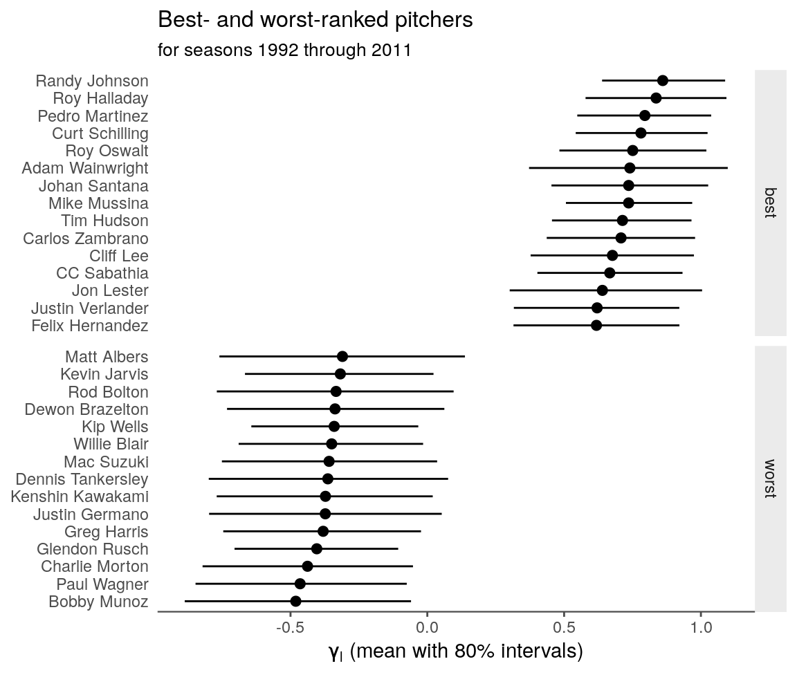
This FanGraphs article tells me that “the home team has historically won only about 54% of the time.” (That “only” is in reference to other sports; apparently it’s around 60% in the NBA.) If I tally up the home team wins for the 1992–2011 year range, I get a similar number.
I was hoping that my estimate of the home-field advantage would agree.
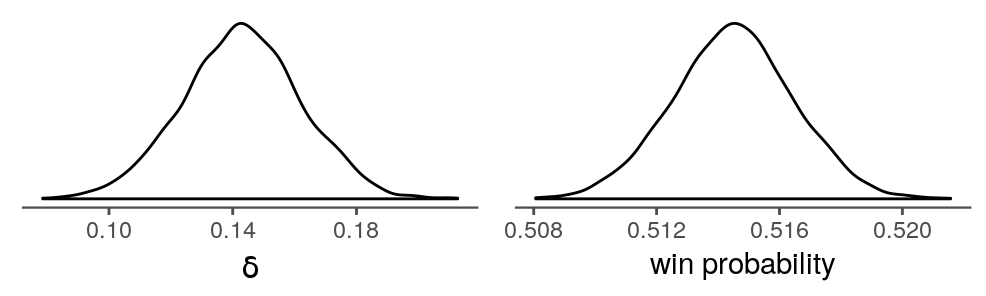
But that’s not the case. The plot on the right shows the win probability for identically matched teams (i.e., the t-distribution parameter is set to \(\delta\)), using posterior draws for Wrigley Field’s middle-of-the-pack scale parameter. The estimate is short by more than 2 percentage points. If I strip the model of all location predictors except for \(\delta\), the estimate remains low.
What’s happening here, I think, is that the home team wins a disproportionate number of close games. This can be seen in run differentials plot above, but it comes out a bit clearer in the below plot.
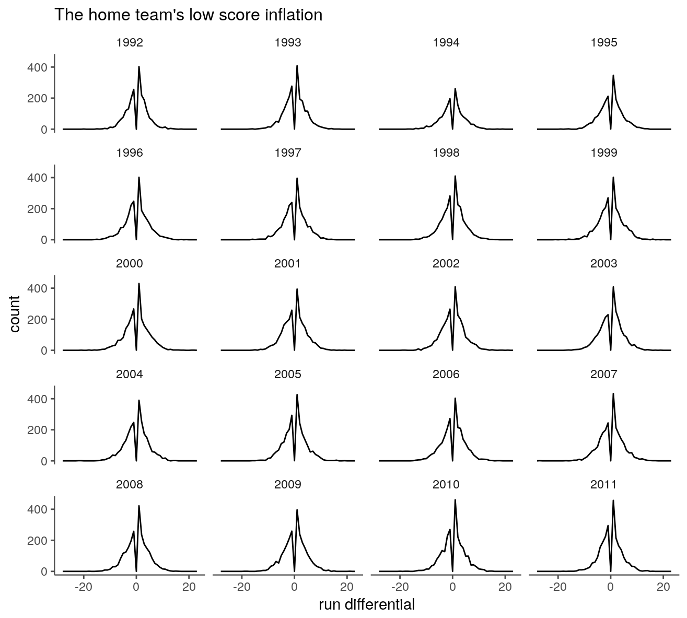
The peak at +1 is consistently taller than the one at -1, but I’m modeling the run differentials with a symmetric distribution.
And finally, the jet lag predictors. Like before, the win probabilities are calculated with the predictor of interest as the sole location parameter and with Wrigley Field’s scale parameter.
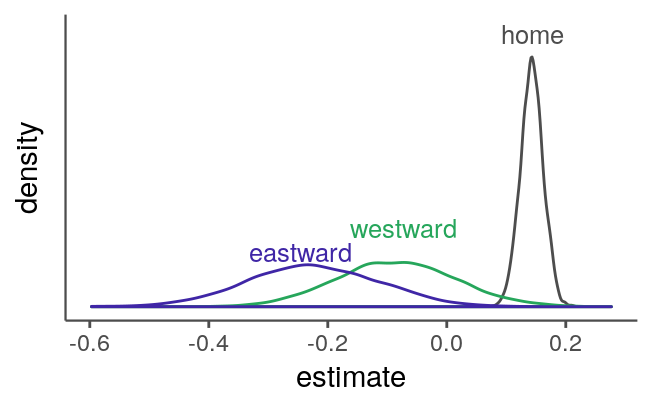
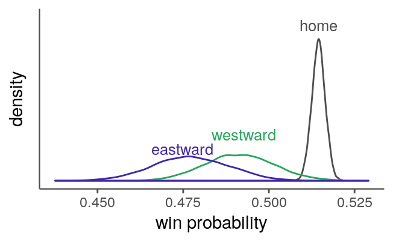
The home-field effect estimate is much more certain than the estimates for either of the lag coefficients, which is unsurprisingly given that every game has a home team5. The extreme ends of the lag estimates extend to a greater magnitude than the home-field estimate does, but, as I discussed above, I think the home-field effect is being underestimated. A value of 0.4 would not be unreasonable given the 54% empirical rate. But then again, the lag magnitudes might be underestimated for a similar reason (i.e., the non-lagged team wins a disproportionate amount of games by a small margin). I don’t know.
Around 85% of the posterior draws for the eastward coefficient are below -0.1, which maps to around a 49% win rate for a lagged team versus an otherwise identical team. The eastward estimate is shifted to the left of the westward estimate in the plot above, but the estimate of the shift itself covers a wide range of values.
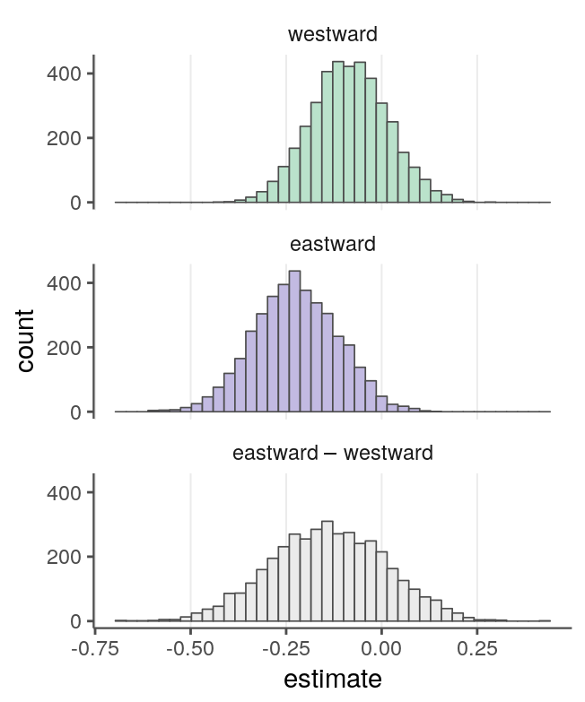
To guess at an upper bound for the effects of jet lag on a team’s success, let’s assume (1) that the model is giving estimates somewhere in the right range, (2) that the 1992–2011 range is representative of other possible year ranges, (3) that the lag predictor is providing a meaningful representation of a team’s collective jet lag, and (4) that jet lag causes the observed decrease in run differentials and there a no other confounders to adjust for. In that case, I’d guess that at most being jet lagged decreases a team’s win probability by five percentage points. This is based on the lower tail of the eastward coefficient estimate and setting the other t-distribution location predictors (team abilities, pitchers, home-field advantage) to zero. For any given game, the effect of lag, like home-field advantage, would usually be swamped by other factors, but it could add up in the long run. The “long run” is shorter in the case of home-field advantage because that it is a part of every game, while a team having lag, at least by the definition used here, occurs in fewer than ten percent of the games. The number of lag games and direction is unevenly distributed among teams, so if each season some teams are losing a couple of more games than others due to lag, that could make a difference over many seasons.
That’s making a lot of assumptions, though. And again, the estimates are wide, and I don’t place much confidence in the magnitude of the lag predictor coefficients given the underestimation of home-field advantage.
This is entirely based on what I gather from their paper. I know little about sports and even less about research on jet lag.↩
I’m not clear on what the grouping was. My guess is by team, year, home or away, and lag type (none or one of their four categories).↩
The model doesn’t specify that a team label corresponds to a team within a single season, but this is how I’m structuring the data.↩
OK, I don’t know enough about baseball to recognize all their names, but their Baseball Reference pages look good.↩
In the sense that a team is labeled as “home” in every game. A small number of games are played outside of either team’s regular park or with a team playing as the visitor in their own park.↩